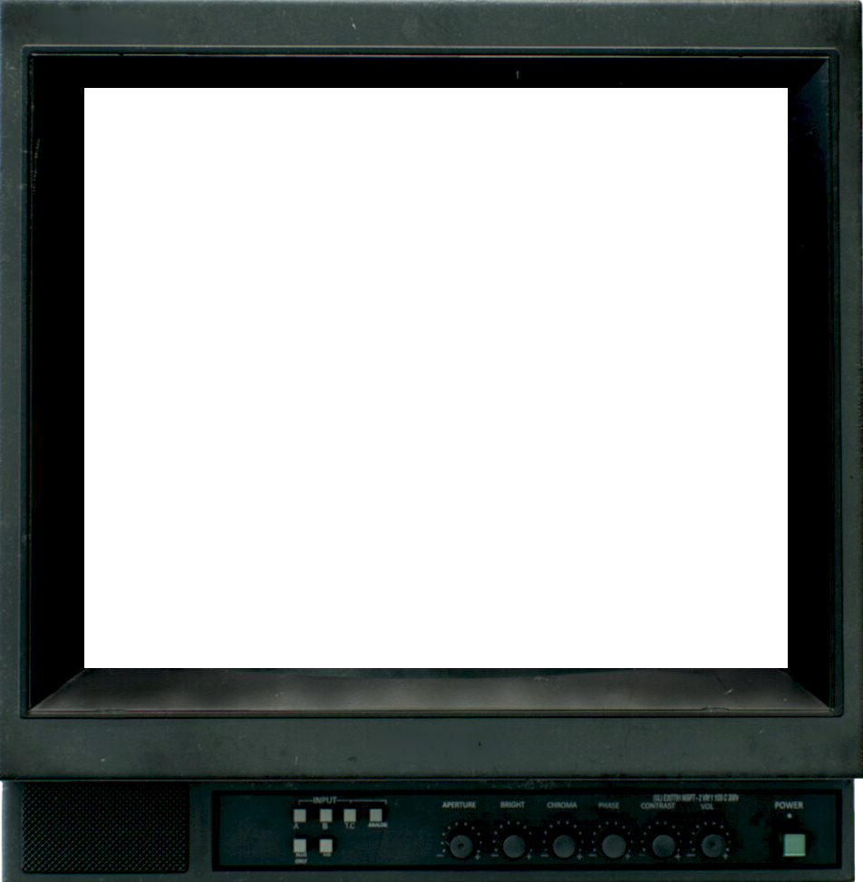

"Wipe Cycle" (1969/2017) is an art instillation created by Frank Gillette and Ira Schneide, that consists of a 3x3 grid of nine retro television monitors. The piece exhibits themes of surveillance, mass media, and participation of the viewers. This website, by Prestyn Phomsoupha, pays homage to this artwork, drawing inspiration from it's themes and structure.
